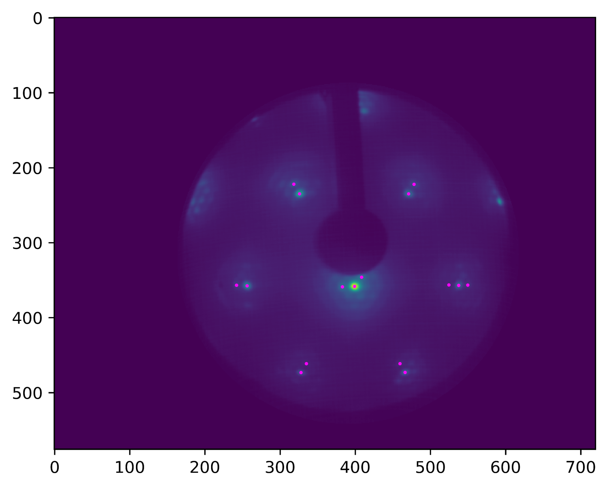
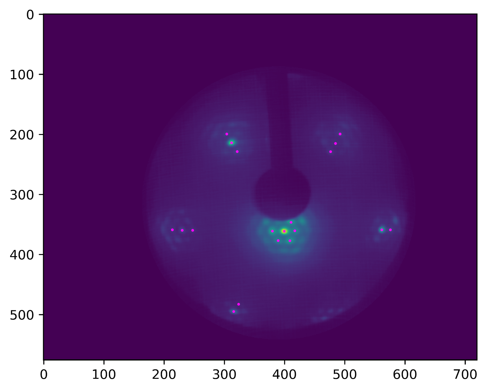
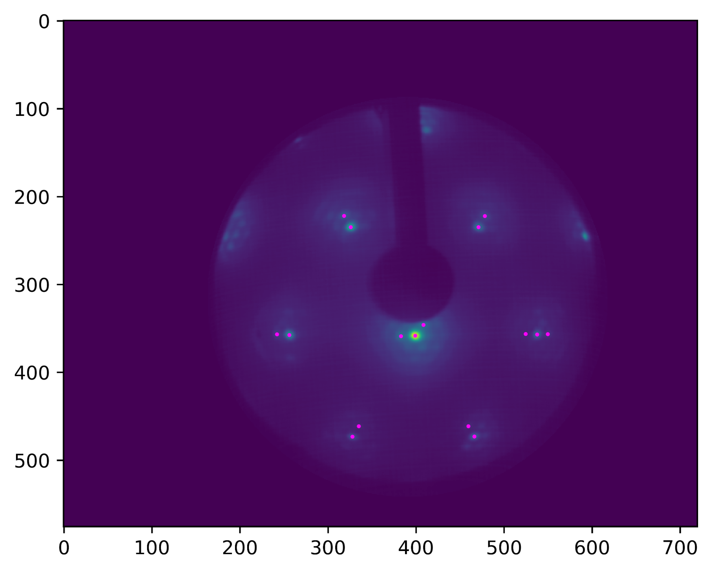
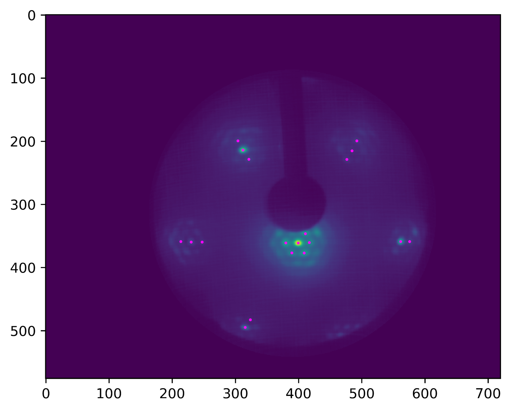

Igor References
Beamtime Logbook
Nanoduomi di carbonio e rimozione atomi con ossigeno PE=5
|
C2H4 uptake a RT 5L (330s a 2x10^-8mbar) |
|
|
SE0523_098 |
C1s post annealing 500° |
|
SE0523_099 |
FL |
|
SE0523_100 |
TR Ossigeno 2x10^-8 mbar T=480° |
|
SE0523_102 |
C1s post annealing 500° |
|
SE0523_103 |
FL |
|
SE0523_104 |
TR Ossigeno 2x10^-8 mbar T=460° |
|
SE0523_106 |
C1s post annealing 500° |
|
SE0523_107 |
FL |
|
SE0523_108 |
TR Ossigeno 2x10^-8 mbar T=500° |
|
SE0523_110 |
C1s post annealing 500° |
|
SE0523_111 |
FL |
|
SE0523_112 |
TR Ossigeno 2x10^-8 mbar T=440° |
|
Zolfooooooooo |
|
|
SE0523_118 |
C1s post annealing 500° |
|
SE0523_119 |
FL |
|
SE0523_120 |
TR Ossigeno 2x10^-8 mbar T=420° |
|
SE0524_002 |
C1s post annealing 500° |
|
SE0524_003 |
FL |
|
SE0524_004 |
TR Ossigeno 2x10^-8 mbar T=520° |
Cresciamo grafene e confrontiamo l’iridio con e senza PE=4
|
|
|
|
SE0524_024 |
? |
|
SE0524_025 |
? |
|
SE0524_026/32 |
Da comparare, iridio con e senza gr |
|
SE0524_027/33 |
FL dei file sopra |
Nanoduomi all’azoto liquido (occhio alle PE)
|
C2H4 uptake a RT 5L (330s a 2x10^-8mbar) |
|
|
SE0524_036 |
C1s_HR a T=-200°(per vedere 3 componenti), PE=5 |
|
SE0524_037 |
FL, PE=5 |
|
SE0524_038 |
C1s_HR a T=-200°(per vedere 3 componenti), PE=4 |
|
SE0524_039 |
FL, PE=4 |
|
SE0524_040 |
TR Ossigeno 2x10^-8 mbar T=-200°, PE=5 |
|
SE0524_041 |
HR ??? |
|
SE0524_042 |
FL |
|
SE0524_043 |
TR Ossigeno 2x10^-7 mbar T da -200° a 500° (CO adsorbito!!) |
|
SE0524_049 |
C1s_HR a T=40°(per vedere 3 componenti), PE=5 |
|
SE0524_050 |
FL, PE=5 |
|
SE0524_052 |
C1s_HR a T=40°(per vedere 3 componenti), PE=4 |
|
SE0524_051 |
FL, PE=4 |
|
SE0524_053 |
TR C1s PO=10^-6 PE=5 T=250° (allargata finestra per vedere CO) |
|
SE0524_058 |
TR C1s PO=10^-6 PE=5 T=200° (allargata finestra per vedere CO, manca FL!!) |
|
SE0524_061 |
C1s post annealing 500° PE=5 |
|
SE0524_062 |
FL |
|
SE0524_063 |
TR C1s PO=10^-6 PE=5 T=150° (allargata finestra per vedere CO) |
|
SE0524_066 |
C1s post annealing 500° PE=5 |
|
SE0524_067 |
FL |
|
SE0524_068 |
TR C1s PO=10^-6 PE=5 T=175° (allargata finestra per vedere CO) |
|
SE0524_070 |
C1s post annealing 500° PE=5 |
|
SE0524_071 |
FL |
|
SE0524_072 |
TR C1s PO=10^-6 PE=5 T=225° (allargata finestra per vedere CO) |
Nanoduomi con annealing a 600° PE=5
|
SE0524_074 |
C1s post annealing 600° |
|
SE0524_075 |
FL |
|
SE0524_076 |
TR C1s PO=10^-8 T=520° |
|
SE0524_078 |
C1s post annealing 600° |
|
SE0524_079 |
FL |
|
SE0524_080 |
TR C1s PO=10^-8 T=420° |
|
SE0525_001 |
C1s post annealing 600° |
|
SE0525_002 |
FL |
|
SE0525_003 |
TR C1s PO=10^-8 T=460° |
|
SE0525_005 |
C1s post annealing 600° |
|
SE0525_006 |
FL |
|
SE0525_007 |
TR C1s PO=10^-8 T=480° |
|
SE0525_009 |
C1s post annealing 600° |
|
SE0525_010 |
FL |
|
SE0525_011 |
TR C1s PO=10^-8 T=500° |
|
SE0525_013 |
C1s post annealing 600° |
|
SE0525_014 |
FL |
|
SE0525_015 |
TR C1s PO=10^-8 T=440° |
ANALISI LEED
Metodi
Abbiamo calcolato le distanze in spazio reciproco di Ir* e M* (Moirè), a partire da immagini a diverse energie e per diversi spot.
La curvatura dello schermo e il fatto che lo spot 00 fosse inclinato rispetto alla direzione standard hanno introdotto delle deformazioni all’immagine. In particolare sono presenti degli effetti di curvatura e la parte superiore delle immagini appare ingrandita rispetto alla parte inferiore.
Per eliminare gli effetti di curvatura è stato usato il paper {ref} che proponeva un metodo di calibrazione. E’ stato sviluppato un programma in python per fare la suddetta calibrazione.
Non essendo a disposizione di tutti i dati la calibrazione delle immagini è stata fatta in modo empirico: è stato sovrapposto all’immagine un reticolo esagonale e si è cercato di far coincidere in modo migliore possibile gli spot di diffrazione dell’iridio al reticolo e di correggere gli effetti di ingrandimento.
Il metodo di correzione forniva, tra i parametri da stimare, anche l’angolo di tilt del campione che risulta essere tra tre e quattro gradi a seconda dell’immagine. Risultati che sembrano compatibili con l’angolo a cui è stato effettivamente inclinato il campione.
Sebbene non si sia utilizzata un’ottimizzazione numerica come primo approccio al problema è stata sufficiente questa rudimentale correzione per aumentare la precisione delle misure.
Gli spot che siamo riusciti a ricostruire sono graficati nelle immagini.
Analisi Dati
Il centro degli spot di diffrazione è stato stimato facendo un fit con una gaussiana 2D in cui poteva esserci correlazione tra le variazioni standard in x e y. Questo ha consentito di fittare meglio anche spot di diffrazione ellissoidali e non perfettamente circolari. Alcuni spot non sono visibili nelle immagini per la scelta dei colori e del contrasto usato, ma sono comunque stati ricostruiti facendo il fit e ottenendo una buona convergenza. Altri spot che sembrerebbero visibili nelle immagini non davano buona convergenza nei fit e sono stati scartati poiché abbiamo comunque un campione dati sufficientemente ampio.
La correzione delle immagini non è stata sufficiente a rimuovere tutta la distorsione e si può notare che comunque è presente un effetto di ingrandimento che dipende dall’angolo rispetto allo spot 00, effetto visibile specialmente nella prima immagine.
Per compensare questo effetto nell’analisi è stato scelto di dividere l’analisi dati in 6 direzioni a rispettivamente allo spot 00 e di procedere alla stima dei vettori di moirè per ognuna delle direzioni, ricostruendo poi il vettore reciproco della cella del carbonio.
Così facendo i risultati che otteniamo sono compatibili con quelli trovati in letteratura.
IRIDIO PULITO
Prendiamo tre spettri: 130, 200 e 400 eV, facciamo il fit e evidenziamo le due componenti (bulk e superficie).
L’intensità degli spettri diminuisce al crescere dell’energia.
Ciò è attribuibile a tre fatti: [a]
La componente di superficie diminuisce al crescere dell’energia, mentre quella di bulk aumenta
Quando l’energia dei fotoni è 130 eV la cinetica degli elettroni è di 70eV, dunque sono sul minimo della curva del cammino libero medio: questo fa si che la componente di superficie sia predominante.
Aumentando l’energia dei fotoni il cammino libero medio aumenta e dunque la componente di superficie è man mano meno influente.
Sia il picco di bulk che quello di superficie si spostano verso sinistra all’aumentare dell’energia dei fotoni
Entrambi i picchi sono shiftati a sinistra, come avessero energie di legame maggiori. Quindi gli elettroni stanno arrivando al rilevatore con energia cinetica inferiore. Come è stata dissipata questa energia? Scattering?
Per la componente di bulk possiamo pensare che, essendo che l’elettrone percorre più strada ora che il suo cammino libero medio è più grande, allora incontra più elettroni con cui può scatterare. Ma per quella di superficie?
Il picco di superficie ha uno shift verso sinistra maggiore di quello di bulk, dunque le due componenti si avvicinano[b]
Ciò significa che gli elettroni provenienti dalla superficie dissipano più energia rispetto a quelli provenienti dal bulk? Perché?
Asimmetria
Osserviamo che la componente di superficie presenta inizialmente asimmetria maggiore di quella di bulk. Questo accade perché il parametro alfa è proporzionale alla densità di stati al livello di fermi ed essendo gli atomi di superficie meno coordinati, hanno densità di stati maggiore al livello di fermi e dunque alfa maggiore.[c]
Al crescere dell’energia alfa cresce per la componente di bulk e decresce per quella di superficie: perché?
Per quanto riguarda la componente di bulk, come si è detto, l’asimmetria aumenta: ciò si spiega perché, essendo aumentato il cammino degli elettroni questi incontrano più atomi, quindi hanno più probabilità di urtare elettroni delle bande di valenza[d]. Come si spiega la diminuzione per la componente di superficie?
Espansione in serie dell’intensità
Espandiamo in serie l’intensità (area sotto i picchi) in funzione del cammino libero medio:
I=I0+Ioe^(-d/l)+I0e^(-2d/l)
La variabile l è il libero cammino medio mentre d è la distanza tra i piani di iridio.
Stiamo completamente trascurando lo scattering, ma per il momento facciamo questa approssimazione. Calcoliamo in questo modo il contributo di bulk (i termini contenenti l’esponeziale) e quello di superficie (I0). Facciamo il rapporto e lo confrontiamo con il rapporto tra aree fatto con i diversi fit. A 130 e 200 otteniamo circa lo stesso rapporto (0.4), molto più piccolo rispetto a quello che ricaviamo dai fit, la responsabile è la diffrazione. A 400 troviamo ancora discrepanza, ma meno importante: a più alte energie la diffrazione ha meno peso!
IRIDIO CON GRAFENE
Plottiamo lo spettro dell’iridio pulito e dell’iridio su cui abbiamo cresciuto il grafene. Se misuriamo le distanze tra picco di bulk e di superficie vediamo che nell’iridio ricoperto di grafene la distanza tra picchi è minore rispetto all’iridio pulito: cioè il grafene rende la superficie di iridio più legata. Lo shift però è lieve, ciò prova che l’interazione tra grafene e iridio è debole.
I conteggi diminuiscono dal caso pulito a quello con grafene: ciò accade perché lo strato di carbonio aumenta la probabilità degli elettroni uscenti dal solido di scatterare e dunque quelli che arrivano al rilevatore sono meno rispetto al caso di iridio pulito.
INCONTRO CON BARALDI 10-07-25
Incontro Baraldi 21/07
RIEPILOGO:
Foglio A4 con gli spettri 2d dei c1sTR per seguire l’andamento del picco di CO.
Facciamo i fit con posizioni fissare e aggiornare l’area del picco senza il background.
Madare materiale in anticipo a Baraldi per le prossime volte
[a]Mi ero scritto anche contribuiscono anche: variazione sezione d'urto differenziale (probabilità di eccitazione) al variare dell'energia e efficienza rilevamento fotoelettroni (risoluzione)
[b]Leggendo in giro ho trovato: "other high-resolution core-level spectroscopy studies on Ir(111) report a consistent SCLS value (e.g., -545 meV or -550 meV)" mentre il nostro scende di più (arriviamo a -527meV).
Nell'articolo di Bianchi c'è proprio scritto "The 4f7/2 core level was decomposed into bulk and surface contributions with SCLS of −0.50 eV." ... "the theoretical prediction based on the equivalent core approximation by Johansson and Mårtensson [17], which suggests that all surface features should experience BE shifts to smaller values than the bulk component."
[c]Ho pensato a questa intro: In un metallo, l'eccitazione di elettroni (i.e. la creazione di coppie e-h), oltre a non essere un processo quantizzato (avviene già con quantità infinitesime di energia), contribuisce all'asimmetria della forma di riga.
Da un punto di vista probabilistico è più facile creare coppie e-h con bassa energia pertanto osserviamo una coda a Eb più alte (o Ek più basse).
Valori elevati di 𝛼 si traducono in una maggiore facilità nel creare coppie e-h. Tutti quei materiali caratterizzati da una densità elevata di elettroni al FL avranno dei picchi di fotoemissione molto asimmetrici.
[d]Scriverei: prossimi al FL.